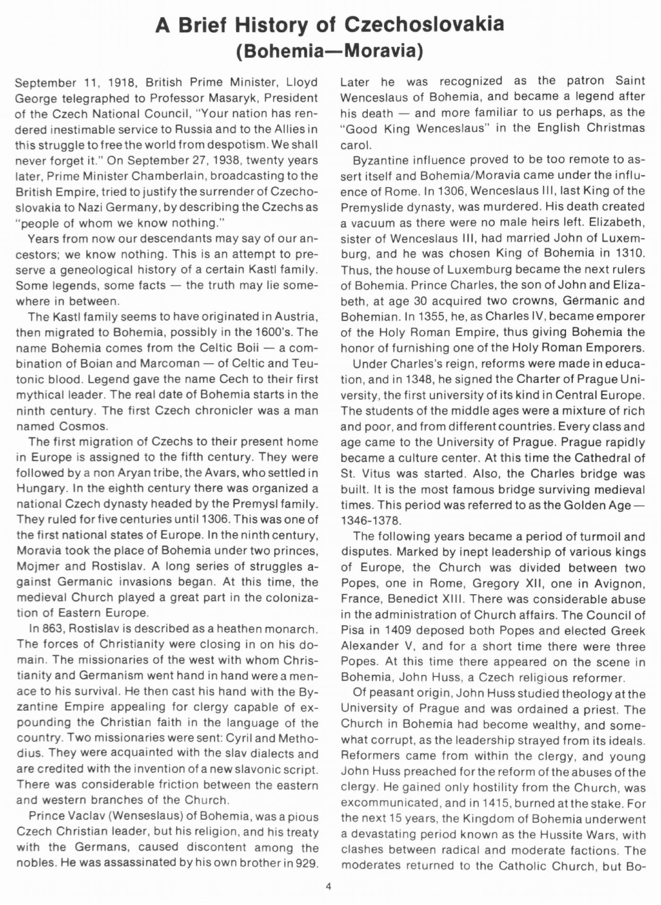

The book · A Brief History of Czechoslovakia (Bohemia/Moravia)
Page 4 A Brief History of Czechoslovakia


Transcription
A Brief History of Czechoslovakia
(Bohemia—Moravia)
September 11, 1918, British Prime Minister, Lloyd George telegraphed to Professor Masaryk, President of the Czech National Council, "Your nation has rendered inestimable service to Russia and to the Allies in this struggle to free the world from despotism. We shall never forget it." On September 27, 1938, twenty years later, Prime Minister Chamberlain, broadcasting to the British Empire, tried to justify the surrender of Czechoslovakia to Nazi Germany, by describing the Czechs as "people of whom we know nothing."
Years from now our descendants may say of our ancestors; we know nothing. This is an attempt to preserve a geneological history of a certain Kastl family. Some legends, some facts — the truth may lie somewhere in between.
The Kastl family seems to have originated in Austria, then migrated to Bohemia, possibly in the 1600's. The name Bohemia comes from the Celtic Boii — a combination of Boian and Marcoman — of Celtic and Teutonic blood. Legend gave the name Cech to their first mythical leader. The real date of Bohemia starts in the ninth century. The first Czech chronicler was a man named Cosmos.
The first migration of Czechs to their present home in Europe is assigned to the fifth century. They were followed by a non Aryan tribe, the Avars, who settled in Hungary. In the eighth century there was organized a national Czech dynasty headed by the Premysl family. They ruled for five centuries until 1306. This was one of the first national states of Europe. In the ninth century, Moravia took the place of Bohemia under two princes, Mojmer and Rostislav. A long series of struggles against Germanic invasions began. At this time, the medieval Church played a great part in the colonization of Eastern Europe.
In 863, Rostislav is described as a heathen monarch. The forces of Christianity were closing in on his domain. The missionaries of the west with whom Christianity and Germanism went hand in hand were a menace to his survival. He then cast his hand with the Byzantine Empire appealing for clergy capable of expounding the Christian faith in the language of the country. Two missionaries were sent: Cyril and Methodius. They were acquainted with the slav dialects and are credited with the invention of a new slavonic script. There was considerable friction between the eastern and western branches of the Church.
Prince Vaclav (Wenseslaus) of Bohemia, was a pious Czech Christian leader, but his religion, and his treaty with the Germans, caused discontent among the nobles. He was assassinated by his own brother in 929. Later he was recognized as the patron Saint Wenceslaus of Bohemia, and became a legend after his death — and more familiar to us perhaps, as the "Good King Wenceslaus" in the English Christmas carol.
Byzantine influence proved to be too remote to assert itself and Bohemia/Moravia came under the influence of Rome. In 1306, Wenceslaus III, last King of the Premyslide dynasty, was murdered. His death created a vacuum as there were no male heirs left. Elizabeth, sister of Wenceslaus III, had married John of Luxemburg, and he was chosen King of Bohemia in 1310. Thus, the house of Luxemburg became the next rulers of Bohemia. Prince Charles, the son of John and Elizabeth, at age 30 acquired two crowns, Germanic and Bohemian. In 1355, he, as Charles IV, became emporer of the Holy Roman Empire, thus giving Bohemia the honor of furnishing one of the Holy Roman Emporers.
Under Charles's reign, reforms were made in education, and in 1348, he signed the Charter of Prague University, the first university of its kind in Central Europe. The students of the middle ages were a mixture of rich and poor, and from different countries. Every class and age came to the University of Prague. Prague rapidly became a culture center. At this time the Cathedral of St. Vitus was started. Also, the Charles bridge was built. It is the most famous bridge surviving medieval times. This period was referred to as the Golden Age — 1346-1378.
The following years became a period of turmoil and disputes. Marked by inept leadership of various kings of Europe, the Church was divided between two Popes, one in Rome, Gregory XII, one in Avignon, France, Benedict XIII. There was considerable abuse in the administration of Church affairs. The Council of Pisa in 1409 deposed both Popes and elected Greek Alexander V, and for a short time there were three Popes. At this time there appeared on the scene in Bohemia, John Huss, a Czech religious reformer.
Of peasant origin, John Huss studied theology at the University of Prague and was ordained a priest. The Church in Bohemia had become wealthy, and somewhat corrupt, as the leadership strayed from its ideals. Reformers came from within the clergy, and young John Huss preached for the reform of the abuses of the clergy. He gained only hostility from the Church, was excommunicated, and in 1415, burned at the stake. For the next 15 years, the Kingdom of Bohemia underwent a devastating period known as the Hussite Wars, with clashes between radical and moderate factions. The moderates returned to the Catholic Church, but Bo-
Transcriber’s notes
Two-column text. Last word 'Bo-' is hyphenated across the page break and continues as 'hemia/Moravia' on page 5 (s007). A speck over the 'e' of 'Germanic' looks like an accent; ignored. Book spellings kept: geneological, Wenseslaus, emporer/Emporers, Cosmos, Mojmer.